08 · KI-Beschleuniger & Edge AI
Mikrocomputertechnik 3 · Datenparallelität, lokale Wiederverwendung und Inferenz
Prof. Dr.-Ing. Daniel Klünder
Stehen, Gehen oder Laufen: Wie würden Sie das programmieren?
Einstieg · Eine Entscheidung aus Beschleunigungswerten
Ein Gerät erhält 32 Zeitpunkte mit je drei Beschleunigungsachsen. Es soll daraus eine Aktivität melden.
Welche Eigenschaft der Messwerte würden Sie auswerten?
Wie sähe Ihre erste Entscheidungsregel aus?
An welchem anderen Menschen oder Bewegungsablauf würden Sie die Regel prüfen?
Zwei Minuten zu zweit: Regel skizzieren und eine mögliche Grenze nennen.
Eine Entscheidung beginnt bei einer beobachtbaren Eigenschaft der Messdaten. Die Einstiegsfrage verlangt deshalb zunächst eine eigene Regel und noch keinen KI-Begriff. Mit C-Arrays, Schleifen und Vergleichen lässt sich beispielsweise ein zeitlicher Ausschnitt auswerten; ein einzelner Messwert beschreibt dagegen noch keinen vollständigen Bewegungsablauf. Zwei Minuten zum Nachdenken und Austauschen gehören zum Zeitbudget.
Erwartbare Vorschläge sind eine Grenze für den Beschleunigungsbetrag, die Stärke seiner Schwankung oder ein wiederkehrendes Muster. Sammeln Sie zu jeder Regel auch einen Fall, in dem sie überprüft werden müsste: anderes Tempo, eine andere Person oder eine andere Lage des Sensors. Die Frage bleibt zunächst offen. Die folgenden Messverläufe machen sichtbar, welche Unterschiede die gewählte Darstellung überhaupt enthält. Später wird die manuell vorgeschlagene Regel mit einer aus Beispielen angepassten Rechenvorschrift verglichen. Erst dann lässt sich beurteilen, welche Rechnung der Prozessor ausführen muss und ob zusätzliche Rechenhardware der Anwendung hilft.
Vom CPU-Kern zur Entscheidung auf dem Gerät
Einstieg · Vorwissen und Lernziel
Vorwissen: C-Arrays und Zeiger, Caches, gewichtete Summen und Befehlsparallelität
Heute: aus Messdaten ein Modell und daraus ein regelmäßiges Rechenmuster entwickeln
Edge: Die Auswertung findet nahe am Sensor statt
Am Ende: Rechenarbeit, Datenverkehr, Speicher und Gesamtzeit begründet vergleichen
Ein Sensorgerät kann Messwerte lokal auswerten und eine Entscheidung liefern, ohne jedes Fenster an einen entfernten Server zu senden. Diesen Verarbeitungsort bezeichnet Edge. Er legt noch keinen bestimmten Prozessortyp fest: Eine geeignete Anwendung kann auf einem gewöhnlichen Mikrocontroller laufen. Ein neuronaler Beschleuniger wird erst dann interessant, wenn sein Rechenmuster und seine Kosten zur Aufgabe passen.
Aus Vorlesung 7 ist bekannt, dass abhängige Summen auf ihre Vorgänger warten und unabhängige Arbeit andere Rechenplätze nutzen kann. Ein Cache hält nahe Kopien von Speicherblöcken; begrenzte Bandbreite kann deshalb auch bei vielen verfügbaren Rechenwerken den Durchsatz bestimmen. Diese Überlegungen werden auf wiederholte gewichtete Summen übertragen. Die benötigten KI-Grundlagen entstehen im ersten Abschnitt aus dem Sensorbeispiel. Besondere Kenntnisse eines Lernframeworks werden nicht vorausgesetzt. Das Ziel ist, von einer verständlichen Entscheidung über die benötigten Zahlen und Operationen zu einer begründeten Hardware- und Firmwarewahl zu gelangen.
Vier Schulstunden: vier Themenblöcke und Abschlussquiz
Einstieg · Ablauf und Arbeitsformen
1
Daten, Modell und Datenversorgung: 30 min
nach Folie 21: 1.1, 1.2, 2.1 · 10 min
2
Datenparallelität und RVV: 30 min
nach Folie 33: 3.1, 3.2, 3.4 · 15 min
3
Systolisches Array: 25 min
nach Folie 42: 4.1–4.3 · 15 min
4
Quantisierung, Firmware und Amdahl: 25 min
nach Folie 53: 5.1, 5.3, 6.3 · 15 min
Abschließend: zwölf Quizfragen · 15 Minuten.
Die Planung umfasst 180 Minuten: 110 Minuten für Erklärung, kurze Vorhersagen und gemeinsame Lösungsbesprechung, 55 Minuten für angeleitete Papierarbeit und 15 Minuten für das abschließende Quiz. Der erste und der dritte Themenblock dauern einschließlich Papierphase je vierzig Minuten, der zweite fünfundvierzig. Er enthält zusätzlich die übliche Int8-Praxis und verbreiternde Befehle; dafür ist der letzte Block um fünf Minuten kürzer, weil die Int8-Formate dort bereits bekannt sind. Mit dem anschließenden Quiz dauert er fünfundfünfzig Minuten; diese Blöcke sind keine einzelnen Schulstunden. Die Abschnitte beginnen mit einer Orientierung; längere Rechnungen erhalten mehr gemeinsame Zeit als eine kurze Begriffszuordnung. Die Notizen dienen zusätzlich als zusammenhängender Lerntext zum Nachlesen.
Teil A des Übungsblatts enthält sechs Aufgaben mit 44 Orientierungspunkten. In der Präsenz werden die hier genannten Teilaufgaben ausgewählt und bei Bedarf mit gemeinsamen Zwischenständen bearbeitet. Die vollständige selbstständige Bearbeitung umfasst weitere Teile. Teil B enthält drei längere, verkettete Aufgaben mit weiteren 44 Punkten und einem geschätzten Umfang von 75 Minuten zur Nachbereitung. Diese Richtwerte sind keine verbindliche Klausurvorgabe. Zwölf Quizfragen verbinden am Ende die behandelten Modelle. Eigene kurze Vorhersagen zwischendurch prüfen den aktuellen Gedanken. Die abschließenden Hintergrundfolien zu Begriffen, Quellen und eigenen Messungen dienen dem Nachlesen und verlängern den Pflichtvortrag nicht.
1 · Von Messdaten zum Modell
Welche Rechnung verbindet ein Bewegungsfenster mit einer Aktivität?
Messverlauf → Merkmale → gewichtete Summe → Lernen → Entscheidung
Die Messdaten stammen aus MotionSense. Geometrische Mini-Rechnungen erklären Prinzipien; das Rohdatenmodell nutzt 32 Zeitpunkte mit je drei Achsen.
Der erste Abschnitt stellt zuerst die Daten und dann die mathematische Beschreibung vor. Aus einem Beschleunigungsverlauf werden zunächst zwei verständliche Eigenschaften eines kurzen Fensters gebildet. Sie lassen sich als Punkte zeichnen und mit einer Geraden untersuchen. Diese Darstellung erklärt, wie Zahlen eine Entscheidung beeinflussen und was Gewichte und Bias bewirken.
Die echten MotionSense-Aufnahmen sind mit 50 Messpunkten je Sekunde erfasst. Drei Achsen enthalten die Beschleunigung einschließlich des Gravitationsanteils; ihre Einheit ist g. Ein Fenster mit 32 Punkten enthält damit 96 einzelne Eingangswerte. Das später trainierte kleine Netz verwendet diese Werte in zeitpunktweiser Achsenreihenfolge. Mittelwert und Streuung des Beschleunigungsbetrags dienen zunächst einer leichter sichtbaren Zwei-Merkmal-Darstellung. Vor der Netzrechnung wird jede der 96 Eingabepositionen mit einem nur aus Trainingsdaten bestimmten Mittelwert und einer Standardabweichung standardisiert. Dafür werden 192 zusätzliche feste Zahlen benötigt; sie gehören zur Vorverarbeitung. Die Zwei-Merkmal-Darstellung und die 96-Eingabe-Rechnung werden getrennt gehalten. Ebenso wird der kurze Handrechenfall nicht als gelernte Parameterzeile ausgegeben.
Aus der gewichteten Summe wird eine Aktivierung
1 / 6 · Von Messdaten zum Modell
Didaktisches Zwei-Merkmal-Beispiel:
\[
x=\begin{bmatrix}1\\0{,}2\end{bmatrix},\quad
w=\begin{bmatrix}-1\\5\end{bmatrix},\quad b=0{,}5
\]
\[z=-1\cdot1+5\cdot0{,}2+0{,}5=0{,}5,\] \[h=\operatorname{ReLU}(z)=\max(0,z)=0{,}5.\]
Bei \(z=-0{,}25\) wäre die Aktivierung null.
Ein Neuron führt eine gewichtete Summe aus und kann darauf eine Aktivierungsfunktion anwenden. Im kleinen Rechenfall werden der erste Eingang mit minus eins und der zweite mit fünf multipliziert. Der Bias kommt einmal zur Summe hinzu. Daraus entsteht die Voraktivierung \(z=0{,}5\) . ReLU bedeutet Rectified Linear Unit und liefert das Maximum aus null und ihrem Eingang. Ein positiver Wert bleibt deshalb erhalten, ein negativer wird zu null.
Die Aktivierung \(h\) ist eine Zahl dieser konkreten Auswertung; die Aktivierungsfunktion ist dagegen die allgemeine Rechenregel. Diese Begriffe sollten beim späteren Speicherzählen auseinandergehalten werden. Ändert sich der zweite Eingang bei sonst gleichen Zahlen auf \(0{,}05\) , ergibt sich \(z=-0{,}25\) und damit \(h=0\) . Die Funktion behandelt beide Seiten der Grenze unterschiedlich. Das Beispiel besitzt bewusst nur zwei Merkmale, damit jeder Beitrag von Hand verfolgt werden kann. Es ist keine behauptete gelernte Gewichtszeile des 96-Eingangs-Modells. Derselbe Aufbau aus Produkten, Bias und Aktivierungsfunktion wiederholt sich dort mit mehr Eingängen und Ausgängen.
Drei Scores werden zu einer Entscheidung
1 / 6 · Von Messdaten zum Modell
Tatsächlich berechnetes Beispiel: Person 21, Gehen, Fenster 0.
0 · Stehen
\(-6{,}243\)
1 · Gehen
\(0{,}901\)
2 · Laufen
\(-1{,}240\)
\[\operatorname{argmax}_i s_i=1\quad\Rightarrow\quad\text{Gehen}.\]
Scores sind keine Wahrscheinlichkeiten.
Die letzte Schicht liefert für jede Klasse eine Vergleichszahl, einen Score. Hier stammen die drei Werte aus der tatsächlich ausgeführten Float32-Auswertung des trainierten Lehrmodells: Person 21, Aktivität Gehen, Fenster mit lokalem Index null. Sie sind auf drei Nachkommastellen gerundet. Die Funktion argmax gibt die Position des größten Eintrags zurück. Der größte Score steht an Position eins und bedeutet mit der vereinbarten Klassenreihenfolge Gehen. Die Vorhersage stimmt in diesem Fenster mit der aufgezeichneten Aktivität überein.
Ein negativer Score ist zulässig: Entscheidend für argmax ist die Reihenfolge der Werte. Die Zahlen sind ohne weitere Normalisierung keine Wahrscheinlichkeiten. Auch ein deutlich größter Score beweist nicht, dass eine Klasse im Alltag richtig ist. Dafür werden Vorhersage und bekannte Aktivität über viele getrennte Testfenster verglichen. Der Eingabevertrag muss außerdem festlegen, wann ein Fenster vollständig ist und wie lange seine Entscheidung gültig bleibt. Diese Verbindung zur Anwendung kehrt in der Firmwarebilanz wieder.
Training bestimmt Parameter, Inferenz verwendet sie
1 / 6 · Von Messdaten zum Modell
\[s=f_\theta(x),\qquad \theta=\{W_1,b_1,W_2,b_2\}\]
bekannte Aktivität zum Fenster
neues Fenster
Fehler berechnen und Parameter ändern
Scores berechnen und Entscheidung liefern
viele wiederholte Schritte
ein Vorwärtslauf je Auswertung
Unser Ablauf: auf dem Entwicklungsrechner trainieren, auf dem Gerät auswerten.
Nach dem konkreten Rechenweg fasst die Schreibweise \(s=f_\theta(x)\) das Modell zusammen. \(x\) ist die Eingabe, \(s\) der Scorevektor und \(\theta\) die Menge der Gewichte und Biaswerte. Beim Training werden diese Parameter verändert. Die bekannte Aktivität eines Trainingsfensters heißt Zielwert oder Label und erlaubt, einen Fehler der Vorhersage zu bestimmen. Bei der Inferenz bleiben die Parameter fest; die Eingabe und die dadurch entstehenden Aktivierungen ändern sich mit jedem Fenster.
Im betrachteten Entwicklungsablauf findet das Training auf dem Entwicklungsrechner statt. Die später eingesetzte Firmware benötigt die festgelegten Parameter und denselben Eingabevertrag, einschließlich der beim Training festgelegten Vorverarbeitung. Das ist eine gewählte Aufgabenteilung und kein allgemeines Verbot von Training auf Edge-Geräten. Der Begriff Edge beschreibt den Verarbeitungsort nahe am Sensor. Für die spätere Hardwarebilanz zählt, dass die Inferenz viele gleichartige Produkte und Summen ausführt, während die Modellparameter wiederverwendet werden. Wie teuer diese Rechnung ist, hängt von ihren Formen, Datentypen, Datenbewegungen und dem Ausführungsmodell ab.
Neue Personen brauchen einen getrennten Test
1 / 6 · Von Messdaten zum Modell
Training
1–16
Gewichte und Bias anpassen
Validierung
17–20
Einstellungen beurteilen
Test
21–24
festgelegtes Modell an neuen Personen bewerten
Beobachtet: 768/768 Trainingsfenster, aber nur 159/192 Testfenster richtig.
Benachbarte Fenster derselben Aufnahme bleiben in derselben Gruppe.
Ein Modell soll mehr leisten als bekannte Aufnahmen wiederzuerkennen. Deshalb werden hier die Personen getrennt: Die Fenster von Personen eins bis sechzehn dienen zur Anpassung der Parameter, die von siebzehn bis zwanzig zur Validierung und die von einundzwanzig bis vierundzwanzig zum abschließenden Test. Validierung bedeutet, Einstellungen zu beurteilen, bevor das endgültige Modell am Test bewertet wird. Testergebnisse dürfen nicht zugleich zur nachträglichen Auswahl günstiger Einstellungen verwendet werden.
Der ausgeführte Versuch verwendet je Person und Aktivität 512 Punkte und daraus sechzehn nicht überlappende Fenster. Eine Epoche ist ein vollständiger Durchlauf der Trainingsbeispiele. Die 600 Trainingsepochen waren vorab festgelegt. Danach werden alle 768 Trainingsfenster richtig zugeordnet, in der Validierung 157 von 192 und im Test 159 von 192, also rund 82,8 Prozent. Der Abstand zeigt, weshalb Trainingsgüte eine Prüfung an neuen Personen nicht ersetzt. Die Gruppentrennung hält benachbarte Fenster derselben Aufnahme zusammen. Eine zufällige Fensteraufteilung könnte nahezu gleiche Abschnitte in Training und Test verteilen und dadurch eine zu günstige Bewertung ergeben.
Eine 1D-Faltung knüpft an bekannte FIR-Filter an
1 / 6 · Von Messdaten zum Modell
\[u[t]=\sum_{k=0}^{K-1}h[k]x[t-k]\]
FIR: lokale gewichtete Summe über ein Zeitfenster
Conv1D: Koeffizienten aus Daten lernen; mehrere Kanäle und Filter möglich
Bias und beispielsweise ReLU ergänzen die Filterrechnung
Neu: gelernte Koeffizienten und weitere Verarbeitung.
Ein FIR-Filter bildet eine gewichtete Summe aus einer begrenzten Zahl zeitlich versetzter Eingangswerte. FIR steht für Finite Impulse Response, endliche Impulsantwort. Die Koeffizienten \(h[k]\) bestimmen, welche Muster im zeitlichen Verlauf hervorgehoben oder gedämpft werden. Damit besitzt die Rechnung denselben Grundbaustein aus Multiplikation und Akkumulation wie die bisher betrachtete gewichtete Summe.
Eine eindimensionale Faltungsschicht, Conv1D, wendet kleine gelernte Gewichtsgruppen an vielen Zeitpositionen an. Mehrere Eingangsachsen können gemeinsam zu mehreren Ausgangskanälen beitragen; Bias und eine Aktivierungsfunktion ergänzen die lineare Filterrechnung. Der Unterschied zum klassischen Filterentwurf liegt unter anderem darin, dass geeignete Koeffizienten anhand der Lernaufgabe angepasst werden. Viele Lernframeworks verwenden dabei technisch eine Kreuzkorrelation, also eine Indizierung ohne die Kernelumkehr der mathematischen Faltung. Die Gewichte und die Indizierung müssen zusammen betrachtet werden. Für die Hardwarefrage bleibt der gemeinsame Kern eine wiederholte lokale Produktsumme mit Möglichkeiten zur Wiederverwendung. Das Hauptmodell dieser Vorlesung bleibt jedoch ein Dense-Netz; die Filterbrücke führt keine zusätzliche Pflichtarchitektur ein.
2 · Rechenarbeit und Daten zählen
Welche Grenze bremst unser Aktivitätsmodell: Rechnung oder Datenversorgung?
Modellannahmen für diesen Abschnitt:
Eine produktbezogene MAC zählt zwei Operationen; Bias startet die Summe.
Modell R: externer Speicher → lokaler Puffer, zunächst nur Eingangsverkehr.
Vier Byte je Operand; Peak und Bandbreite werden ausdrücklich angegeben.
Die Form des Modells legt seine Rechenarbeit fest; wie schnell die Hardware diese Arbeit versorgen kann, ist eine zweite Frage. Eine Dense-Schicht bildet für jeden Ausgang eine Produktsumme. Die gleichen Eingaben werden von mehreren Ausgängen gebraucht. Schon daraus entstehen sowohl echte Summenabhängigkeiten als auch Chancen zur Wiederverwendung.
Für die folgenden Rechnungen werden die Annahmen hier gebündelt. Eine MAC, Multiply-Accumulate, bedeutet ein Produkt zu einer laufenden Summe zu addieren. Wir zählen dafür zwei arithmetische Operationen und initialisieren den Akkumulator mit dem Bias. Das Verkehrsmodell R betrachtet zunächst nur Eingangsbytes vom externen Speicher zum lokalen Operandenpuffer. Später kommen die Ausgaben ausdrücklich hinzu. Die gezeigten kleinen Matrizen sind überschaubare Rechenkerne, an denen sich die Arbeit des größeren Aktivitätsmodells nachvollziehen lässt. Ihre Zahlen sind nicht dessen gelernte Gewichte.
Parameter sind gespeicherte Zahlen, MACs sind Arbeit
2 / 6 · Rechenarbeit und Daten
Dense mit \(n\) Eingängen und \(m\) Ausgängen:
Gewichte und Biaswerte
\(mn+m\)
MACs je Eingabe
\(mn\)
Operationen je Eingabe
\(2mn\)
/* C17: Nullpunkte null. Bias in der Produktskala; gueltige Arrays. Produkte und Summen passen in Int64. */ int64_t sum = bias; for ( size_t i = 0 ; i < n; ++ i) += ( int64_t ) input[ i] * weight[ i];
Parameterzahl und Rechenarbeit beantworten verschiedene Fragen. Die Matrix einer Dense-Schicht enthält für jedes Eingangs-/Ausgangspaar ein Gewicht, insgesamt \(mn\) . Dazu kommt ein Bias je Ausgang. Eine neue Eingabe verändert diese Parameter nicht; sie benötigt aber erneut \(mn\) Produkte mit Akkumulation. Ein Batch wiederholt die Arbeit für mehrere Eingaben und verwendet dieselben Parameter weiter.
Der C-Ausschnitt zeigt eine einzelne Zeile nach Quantisierung mit Nullpunkten null und einem Bias in der Produktskala. Bei anderen Nullpunkten müssen diese vor der Multiplikation abgezogen werden; die Quantisierung wird im fünften Abschnitt erklärt. sum beginnt mit dem Bias. Jede Iteration liest ein Wertepaar und erweitert die laufende Summe. Die Typumwandlung vor der Multiplikation verbreitert die Rechnung; passende Wertebereiche bleiben Voraussetzung. Innerhalb der Summe benötigt jeder Schritt den vorherigen Akkumulatorwert. Verschiedene Ausgangszeilen haben dagegen eigene Summen und können unabhängig fortschreiten. Deshalb sind Parameter, Operationen und Maschinenbefehle getrennt zu zählen: Eine MAC kann je nach Zielhardware einen Befehl, mehrere Befehle oder einen Teil eines größeren Auftrags bilden.
Dieselbe Matrixrechnung mit Wiederverwendung
2 / 6 · Rechenarbeit und Daten
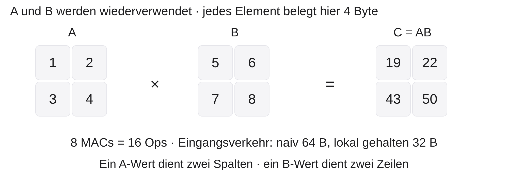
Ein Tile ist ein gemeinsam lokal gehaltener Matrixausschnitt.
Wiederverwendung senkt den Verkehr, ohne die mathematische Aufgabe zu verändern. Die beiden Zwei-mal-zwei-Matrizen dienen als kleiner Ausschnitt einer Matrixrechnung. Jede Ausgabesumme braucht zwei Produkte: \(C_{00}=1\cdot5+2\cdot7=19\) , \(C_{01}=1\cdot6+2\cdot8=22\) , \(C_{10}=3\cdot5+4\cdot7=43\) und \(C_{11}=3\cdot6+4\cdot8=50\) . Insgesamt entstehen acht MACs beziehungsweise sechzehn Operationen.
Jeder A-Wert wird für zwei Ausgabespalten und jeder B-Wert für zwei Ausgabezeilen benötigt. Lädt die naive Rechnung beide Operanden je MAC neu, sind das sechzehn Transfers zu je vier Byte, also 64 Byte. Werden die acht verschiedenen Eingangswerte einmal geladen und lokal gehalten, genügen 32 Byte über dieselbe Grenze. Die Intensität steigt von \(16/64=0{,}25\) auf \(16/32=0{,}5\) . Diese Optimierung kann ebenso eine CPU verwenden; ein lokales Tile ist kein exklusives Merkmal einer NPU.
Auch Ausgaben und Wartezeiten gehören zur Bilanz
2 / 6 · Rechenarbeit und Daten
Eingänge
\(64\) B\(32\) B
mit vier Ausgaben zu je \(4\) B
\(80\) B\(48\) B
Intensität mit Ausgaben
\(16/80=0{,}2\) \(16/48=1/3\)
Bandbreite begrenzt die ankommenden Bytes pro Zeit.
Latenz bestimmt, wann ein benötigter Wert bereitsteht.
Eine Summenabhängigkeit bleibt eine weitere Grenze.
Zur vollständigen Verkehrsbilanz gehören auch die Ausgaben. Hier starten die Summen bei null und die Operation lautet \(C=AB\) ; ein altes C wird deshalb nicht eingelesen. Vier fertige Ausgaben kosten weitere sechzehn Byte. Naiv entstehen 80, mit lokalem Tile 48 Byte. Die Intensitäten sinken entsprechend auf \(0{,}2\) und \(1/3\) Operation je Byte. Der Vergleich erweitert ausdrücklich die Zählbasis um die Gegenrichtung.
Verkehrsmenge, Bandbreite und Latenz sind dennoch verschiedene Größen. Vier unabhängige Transfers mit Latenz drei können bei Startabstand eins in den Takten eins bis vier starten und an den Enden von drei bis sechs fertig werden. Ihre Überlappung verkürzt die einzelne Latenz nicht. Tiling verringert dagegen die benötigte Datenmenge. Eine abhängige Summenkette kann zusätzlich auf ihr voriges Ergebnis warten. Diese Unterscheidung erklärt, weshalb weder breite Speicherpfade noch mehr Multiplikatoren für sich allein jede Verzögerung beseitigen.
Papierphase 1: Rechnung und Speichergrenze
2 / 6 · Rechenarbeit und Daten
Teil A: 1.1, 1.2 und 2.1 · 10 Minuten
Zwei Schichten mit ReLU bis zur Ausgabe verfolgen
Parameter und produktbezogene MACs getrennt zählen
Roofline-Knick und obere Rate bestimmen
Weitere Teilaufgaben dienen der Nachbereitung.
Die erste Papierphase überträgt die Regeln auf ein kleines zweischichtiges Netz. Für die gegebenen Matrizen entsteht zunächst \(z=[7,-15,-1]^T\) , nach ReLU \(h=[7,0,0]^T\) und schließlich \(y=10\) . Die erste Schicht besitzt sechs Gewichte und drei Biaswerte, die zweite drei Gewichte und einen Bias. Zusammen sind es dreizehn Parameter und neun produktbezogene MACs. Lassen Sie Zwischenergebnisse erklären, bevor die Endzahlen verglichen werden.
Im getrennten Roofline-Fall des Blatts liegen Peak und Bandbreite bei zwölf Operationen beziehungsweise sechs Byte je Takt. Der Knick ist daher zwei Operationen je Byte; bei Intensität \(0{,}5\) und drei sind die Obergrenzen drei und zwölf Operationen je Takt. Die weiteren Teilaufgaben untersuchen die affine Zusammenfassung, lebende Aktivierungspuffer und die nötige Tilegröße. Vollständige Herleitungen stehen im Lösungsprofil; die Präsenzphase bearbeitet ausdrücklich die angegebene Auswahl.
3 · Gleiche Rechnung auf vielen Daten
Wie wird aus vielen ähnlichen Produkten parallele Arbeit?
Modellannahmen für diesen Abschnitt:
Gepackte Beispielbytes werden modulo 256 addiert, ohne Lane-Übertrag.
RVV 1.0: nur ausdrücklich unterstützte Konfigurationen.
Ergebnis bei Start \(t\) und Latenz \(L\) : Ende von \(t+L-1\) .
Das Aktivitätsmodell enthält viele ähnliche Produkte. Datenparallelität nutzt diese Gleichartigkeit; Befehlsparallelität nutzt unabhängige Maschinenbefehle. Die Begriffe beschreiben unterschiedliche Ebenen und können gemeinsam auftreten. Eine breite Operation bedeutet außerdem noch nicht, dass für jedes Element dauerhaft ein eigenes Rechenwerk vorhanden ist.
Die Zahlen- und Zeitannahmen stehen am Anfang des Abschnitts. Gepackte Bytes werden im Beispiel getrennt modulo 256 addiert. Bei der RISC-V-Vektorerweiterung RVV 1.0 unterscheiden wir Registerkapazität, aktive Länge und physische Lanes. Für Zeitbilder gilt: Ein Start in Takt \(t\) mit Latenz \(L\) liefert sein Ergebnis am Ende von \(t+L-1\) ; ein abhängiger Nutzer beginnt frühestens danach. Diese Verträge erlauben einen nachvollziehbaren Vergleich, während der Befehlssatz selbst die Wirkung der Operationen beschreibt.
Der Abschnitt führt von Lane-Grenzen und Akkumulatorbreite zur üblichen Int8-Praxis: schmal speichern, breit rechnen. Danach fassen drei Folien die Grundideen von RVV zusammen, bevor verbreiternde Befehle zeigen, was diese Praxis an Registern und Takten kostet.
Datenparallelität respektiert Elementgrenzen
3 / 6 · Datenparallelität
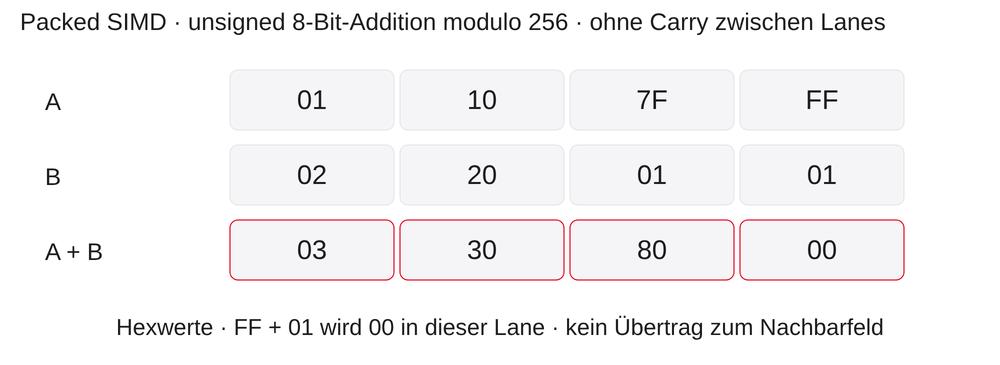
DLP: gleiche Arbeit an mehreren Daten · SIMD: gemeinsame Befehlssteuerung
Int8-Netze: Ein Lane-Überlauf verfälscht unbemerkt.
Gleiche Arbeit an vielen Werten ist Datenparallelität, DLP oder Data-Level Parallelism. SIMD, Single Instruction, Multiple Data, ist eine mögliche Umsetzung mit gemeinsamer Befehlssteuerung. ILP aus der CPU-Vorlesung kann gleichzeitig unabhängige Befehle oder Ausgabesummen nutzen. Innerhalb einer einzelnen Akkumulation bleibt deren Wertabhängigkeit bestehen.
Die Abbildung betrachtet vier vorzeichenlose Acht-Bit-Felder in einem breiteren Register. Jede Lane addiert ihre beiden Bytes modulo 256: Es entstehen 3, 48, 128 und 0, hexadezimal 03, 30, 80 und 00. Ein Übertrag verlässt das betreffende Feld nicht. Ein gewöhnliches 32-Bit-add behandelt dagegen das gesamte Wort als eine Zahl und kann einen Byteübertrag weiterreichen. Das Beispiel zeigt deshalb eine bestimmte gepackte Semantik, keinen beliebigen RISC-V-Basisbefehl. Sättigung wäre nochmals eine andere Regel; sie begrenzt statt umzuschlagen.
Für Int8-Netze ist diese Regel entscheidend. Gepackte Rechnungen sind schnell, liefern aber nur dann richtige Werte, wenn jedes Ergebnis in seine Lane passt. Produkte und Summen tun das meist nicht: \(20\cdot20=400\) ergibt in einer Acht-Bit-Lane modulo 256 den Wert 144, als vorzeichenbehafteter Int8-Wert also \(144-256=-112\) . Ein solcher Fehler löst keine Ausnahme aus. Die beiden folgenden Folien zeigen, welche Breite eine Produktsumme benötigt und wie Integer-Netzkerne deshalb üblicherweise vorgehen.
Schmale Operanden brauchen breite Produktsummen
3 / 6 · Datenparallelität
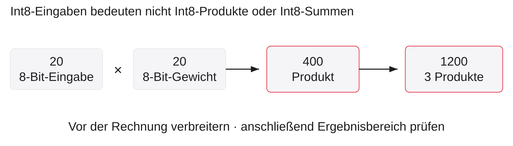
Int8 speichert die Operanden; es legt die Akkumulatorbreite nicht fest.
Ein kleines Eingabeformat begrenzt nicht den Wert eines Produkts. Int8 reicht von \(-128\) bis 127. Bereits \(20\cdot20=400\) und die Summe dreier solcher Produkte, 1200, passen dort nicht hinein. Der Akkumulator muss den Wertebereich der ganzen Produktsumme einschließlich Bias und Nullpunktkorrektur aufnehmen.
Deshalb verwenden Integer-Netzkerne häufig Int8-Operanden und eine breitere Int32-Akkumulation. Auch deren Bereich ist endlich. Schon zwei maximal positive Produkte \((-128)(-128)\) überschreiten den Int16-Bereich. Die Breite muss aus Zeilenlänge und Operandenbereichen begründet werden. Verbreitern, englisch Widening, muss vor einer zu schmalen Rechnung erfolgen; abgeschnittene Bits entstehen durch einen späteren Cast nicht neu. Der begleitende Hostcode rechnet für seine Bereichsprüfung zunächst in Int64. Die spätere Rückskalierung auf einen Ausgangscode heißt Requantisierung und wird im Firmwareabschnitt behandelt. Wie Speicherformat, Rechenformat und Ausgabeformat in der Praxis zusammenspielen, fasst die nächste Folie zusammen.
Schmal speichern, breit rechnen
3 / 6 · Datenparallelität
Gewichte, Aktivierungen speichern
Int8
Flash, SRAM und Transfers sparen
Multiplizieren
Int8 · Int8 → Int16
jedes Produkt exakt
Akkumulieren, Bias addieren
Int32
ganze Zeile ohne Überlauf
Schichtende
Int32 → Int8
requantisieren, sättigen
Statt Int8-Produkten mit Überlauf: verbreiternde Multiplikations-, MAC- oder Skalarproduktbefehle.
Die beiden vorigen Folien beschreiben eine Gefahr und eine Bedingung: Eine schmale Lane verfälscht ein zu großes Ergebnis ohne Meldung, und eine Produktsumme braucht mehr Bits als ihre Operanden. Integer-Netzkerne lösen beides üblicherweise, indem sie das Speicherformat vom Rechenformat trennen. Die Tabelle liest sich von oben nach unten als Weg eines Werts durch eine Schicht.
Gewichte und Aktivierungen liegen als Int8 im Speicher. Ein Wert belegt dann ein Byte statt vier Byte bei Int32 oder Float32. Das schont Flash und SRAM, und jeder Ladevorgang bringt über dieselbe Busbreite viermal so viele Werte heran. Bei geringer Rechenintensität begrenzen gerade diese übertragenen Bytes die nutzbare Rate, wie die Roofline-Betrachtung im zweiten Abschnitt gezeigt hat.
Beim Rechnen wird verbreitert. Das Produkt zweier Int8-Werte liegt zwischen \(-128\cdot127=-16\,256\) und \((-128)\cdot(-128)=16\,384\) und passt damit exakt in Int16. Für die Summe genügt Int16 nicht: Schon zwei Produkte von \(16\,384\) ergeben \(32\,768\) . Akkumuliert wird deshalb in Int32. Dort passen auch die 96 Produkte einer Zeile des Aktivitätsmodells mit großer Reserve, denn \(96\cdot16\,384=1\,572\,864<2^{31}\) . Der Bias wird als Int32 in derselben Produktskala addiert. Viele Befehlssätze bieten dafür verbreiternde Multiplikationen, Multiply-Accumulate-Befehle oder Skalarproduktbefehle. Sie lesen Int8-Operanden und schreiben breitere Ergebnisse oder summieren direkt in breitere Elemente. Ein Int8-Produkt mit Überlauf, das erst danach umgewandelt würde, entsteht so gar nicht.
Erst am Schichtende, wenn die Int32-Summe vollständig ist, folgen Aktivierung wie ReLU und Skalierung. Für eine nachfolgende Int8-Schicht wird der Wert requantisiert: skaliert, gerundet, um den Nullpunkt verschoben und auf \(-128\) bis \(127\) begrenzt. Diese Sättigung ist hier gewollt; der fünfte Abschnitt rechnet sie an einem Beispiel durch. Welche verbreiternden Befehle eine Plattform besitzt und wie schnell sie arbeiten, bestimmen Befehlssatz und Mikroarchitektur. Nach den RVV-Grundideen zeigen zwei Folien am Ende dieses Abschnitts ein Beispiel.
Ein Start pro Takt ist nicht Latenz eins
3 / 6 · Datenparallelität
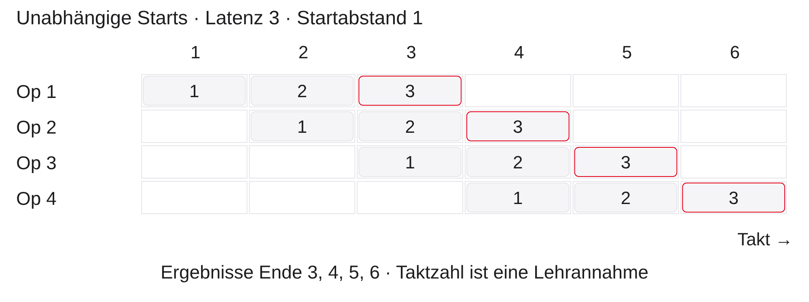
Ergebnislatenz \(3\) Takte · Initiationsintervall \(1\) Takt
Folge für Netze: Viele unabhängige Ausgabesummen halten die Pipeline voll.
Latenz und Initiationsintervall bestimmen verschiedene Teile eines Zeitplans. Latenz ist die Dauer bis zum fertigen Ergebnis; das Initiationsintervall ist der kleinste Abstand zweier Starts auf derselben Ressource. Eine gepipelinete Einheit kann eine neue unabhängige Operation beginnen, während ältere noch spätere Stufen durchlaufen.
Im Bild starten vier Operationen in den Takten eins bis vier. Bei Latenz drei entstehen ihre Ergebnisse an den Enden der Takte drei bis sechs. Die roten letzten Stufen markieren Fertigstellung. Das kurze Fenster enthält damit vier Operationen in sechs Takten; ein langer Strom könnte trotzdem ein Ergebnis pro Takt liefern. Bei einer einzigen abhängigen Akkumulatorkette ist dieser Startabstand allein nicht ausreichend: Der nächste Schritt benötigt sein Vorgängerergebnis. Mehrere unabhängige Ausgabesummen des Netzes können solche Latenzlücken füllen. Auch die spätere Vektorlänge sagt daher allein noch nichts über die Laufzeit eines Befehls. Am Ende des Abschnitts verwendet eine Kette aus verbreiternder Multiplikation und Addition genau dieses Modell mit Latenz drei und Initiationsintervall eins.
RVV-Idee 1: Die Hardware wählt die aktive Länge
3 / 6 · Datenparallelität
\[\mathrm{VLMAX}=\mathrm{LMUL}\,\frac{\mathrm{VLEN}}{\mathrm{SEW}}\]
\(128\) Bit\(32\) Bit\(1\) \(4\) Elemente
\(1024\) Bit\(32\) Bit\(1\) \(32\) Elemente
Derselbe Code erhält zur Laufzeit von vsetvli die aktive Länge \(\mathrm{VL}\leq\mathrm{VLMAX}\) .
Die RISC-V-Vektorerweiterung RVV legt im Programm keine feste Vektorbreite fest. Sie stellt 32 architektonische Vektorregister v0 bis v31 bereit. VLEN ist deren implementierte Breite in Bit. SEW, Selected Element Width, ist die gewählte Elementbreite und LMUL die Größe der verwendeten Registergruppe. Daraus folgt VLMAX, die maximale Elementzahl einer unterstützten Konfiguration.
Bei LMUL eins ergeben 128 Registerbits und 32 Bit je Element vier Plätze, 1024 Registerbits zweiunddreißig. Das Programm fragt deshalb mit vsetvli nach, wie viele Elemente ein Vektorbefehl jetzt bearbeiten darf. Die zurückgegebene aktive Länge VL ist höchstens VLMAX und kann kleiner sein; Plätze dahinter heißen Tail, inaktiver Rest. Der praktische Nutzen: Derselbe Maschinencode läuft auf Kernen mit 128 oder 1024 Registerbits, ohne dass für jede Breite eine eigene Schleife geschrieben werden muss. Bei SIMD-Erweiterungen mit fester Registerbreite steht die Elementzahl dagegen im Befehl; eine breitere Einheit verlangt andere Befehle oder eine neue Übersetzung.
VL zählt die Elemente eines Befehls, nicht die physischen Rechenwerke. Eine Lane ist ein tatsächlich vorhandener elementweiser Rechenpfad. Eine Implementierung kann VL Elemente mit wenigen Lanes über mehrere Takte bearbeiten; die Befehlswirkung bleibt dieselbe. Für die Programmlogik zählt daher zuerst die aktive Länge, für die Zeitrechnung kommen Lanes und Datenversorgung hinzu. Offen bleibt, wie eine Schleife eine beliebige Elementzahl mit diesen wechselnden Längen vollständig bearbeitet.
RVV-Idee 2: Strip-Mining ohne Nachspann
3 / 6 · Datenparallelität
1.0 ; a0=N, a1=A, a2=B, a3=C; uint32_t-Arrays , doneloop: , a0, e32, m1, ta, ma. v v0, ( a1) . v v1, ( a2) . vv v2, v0, v1. v v2, ( a3) , t0, 2 add a1, a1, t1add a2, a2, t1add a3, a3, t1sub a0, a0, t0, loopdone: ret Rest und Zeiger rücken um das zurückgegebene VL weiter.
Reale Datenlängen sind nicht immer ein Vielfaches der aktiven Länge; die 96 Eingänge des Aktivitätsmodells sind es beispielsweise bei VLMAX 64 nicht. Strip-Mining zerlegt ein Array deshalb in aufeinanderfolgende Streifen der jeweils gewählten Länge VL. In jedem Durchlauf fordert die Schleife mit dem verbleibenden Rest an, bearbeitet die zurückgegebenen VL Elemente und zieht VL vom Rest ab, bis nichts mehr übrig ist. Ein eigener skalarer Nachspann für die letzten Elemente entfällt, weil der letzte Streifen einfach kürzer ist.
Den angeforderten Rest nennt RVV AVL, Application Vector Length. RVV 1.0 legt für unterstützte Konfigurationen fest: Passt der Rest, gilt \(\mathrm{VL}=\mathrm{AVL}\) . Ab \(\mathrm{AVL}\geq2\,\mathrm{VLMAX}\) gilt \(\mathrm{VL}=\mathrm{VLMAX}\) . Dazwischen darf die Hardware jede Länge von \(\lceil\mathrm{AVL}/2\rceil\) bis VLMAX wählen und so die letzten beiden Streifen ausgleichen. Bei Rest 40 und VLMAX 32 sind \(32+8\) und \(20+20\) zulässig, \(16+24\) dagegen nicht. Bei 1000 Elementen sind zunächst 30 volle Streifen erzwungen, danach zwei Reststreifen, zusammen 32 Durchläufe. Eine Schleife darf also weder VLMAX noch das Minimum aus AVL und VLMAX voraussetzen; sie verwendet stets die Rückgabe von vsetvli.
Die RVV-1.0-Lehrfolge setzt das für eine elementweise Addition um. a0 hält den Rest, a1 bis a3 die Adressen gültiger, ausgerichteter uint32_t-Arrays A, B und C; C überschneidet sich nicht mit den Quellen. Bei N null überspringt beqz alle Zugriffe. vsetvli wählt e32 und m1 und schreibt VL nach t0; ta und ma erlauben, Tail- und maskierte Inhalte nicht zu erhalten. Die Loads holen die aktiven Elemente, vadd.vv addiert modulo \(2^{32}\) , und der Store schreibt nur aktive Ergebnisse. slli berechnet mit dem Shift um zwei genau \(4\cdot\mathrm{VL}\) Byte; um diese Bytezahl rücken die Zeiger, der Rest sinkt dagegen um VL Elemente. Die Folge wurde hier nicht als RISC-V-Programm ausgeführt; ihre Zeigerregel lässt sich direkt aus dem Vertrag prüfen. SIMD-Erweiterungen mit fester Breite brauchen für denselben Rest dagegen eigenen Code, etwa einen skalaren Nachspann oder Masken.
RVV-Idee 3: Gruppen tauschen Anzahl gegen Länge
3 / 6 · Datenparallelität
VLEN \(128\) Bit, SEW \(32\) Bit, Lehrmodell mit zwei Lanes:
\(1\) \(32\) \(4\) \(2\)
\(2\) \(16\) \(8\) \(4\)
\(4\) \(8\) \(16\) \(8\)
\(8\) \(4\) \(32\) \(16\)
Verbreiternde Befehle belegen für doppelt breite Ergebnisse \(\mathrm{EMUL}=2\,\mathrm{LMUL}\) Register.
LMUL fasst mehrere Vektorregister zu einer logischen Gruppe zusammen. Mit LMUL zwei bilden etwa v2 und v3 eine Gruppe, die im Befehl über v2 angesprochen wird; eine Gruppe beginnt deshalb bei einer durch LMUL teilbaren Registernummer. Gruppen helfen, wenn ein einzelnes Register für einen Schritt zu wenige Elemente fasst oder breitere Zwischenwerte gehalten werden müssen. RVV erlaubt für schmale Typen außerdem gebrochene Werte wie ein halb; sie werden hier nicht benötigt.
Die Tabelle rechnet beide Seiten der Abwägung für VLEN 128 und SEW 32. VLMAX wächst proportional zu LMUL von 4 auf 32. Eine Schleife braucht damit weniger Durchläufe sowie weniger vsetvli- und Zeigerbefehle. Zugleich sinkt die Zahl unabhängig nutzbarer Gruppen von 32 auf 4. Schon die Additionsschleife benötigt drei Gruppen für A, B und C. Bei LMUL acht blieben nur v0, v8, v16 und v24; v0 dient bei maskierten Befehlen zusätzlich als Maske.
Die letzte Spalte verwendet das Lehrzeitmodell der Übung: Ein arithmetischer Befehl mit VL aktiven Elementen belegt auf zwei Lanes \(\lceil\mathrm{VL}/2\rceil\) Takte, hier mit VL gleich VLMAX. Eine größere Gruppe macht die Arbeit je Element also nicht schneller; jeder einzelne Befehl dauert länger. VL bestimmt die wirksamen Elemente, die Lanes die interne Bearbeitungszeit.
Für Int8-Netze ist diese Abwägung besonders wichtig. Ein verbreiternder Befehl schreibt Ergebnisse doppelter Elementbreite: EEW, Effective Element Width, ist gleich zweimal SEW. Damit dieselben VL Elemente Platz finden, belegt das Ergebnis eine Gruppe mit EMUL, Effective LMUL, gleich zweimal LMUL. Bei LMUL acht ist deshalb kein verbreiternder Befehl möglich. Nach der Weitergabe fertiger Elemente zeigt ein Beispiel am Ende des Abschnitts, wie sich diese Registerfolge auswirkt.
Chaining gibt fertige Elemente direkt weiter
3 / 6 · Datenparallelität
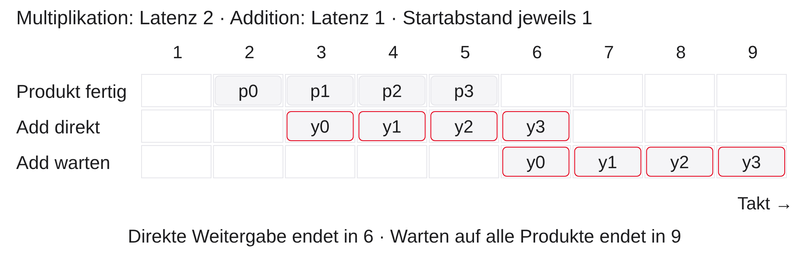
Multiplikationslatenz \(2\) , Additionslatenz \(1\) , je ein Start pro Takt
Chaining verkürzt das Warten zwischen zwei elementweisen Operationen. Ein fertiges Produkt kann bereits zur zugehörigen Addition gelangen, während spätere Produkte noch gerechnet werden. Die Abbildung verbindet vier unabhängige Multiplikationen mit vier unabhängigen Additionen; sie zeigt keine einzige abhängige Summenkette und keine verschmolzene FMA-Operation.
Die Produkte starten in eins bis vier und enden bei Latenz zwei in zwei bis fünf. Mit Weitergabe beginnen die Additionen frühestens im Folgetakt, also in drei bis sechs. Bei Additionslatenz eins enden sie in denselben Takten. Ohne Chaining wartet das Vergleichsmodell zuerst auf alle Produkte und beginnt dann in sechs bis neun. Der Ausschnitt endet folglich in sechs statt neun. Die roten Ergebnisse markieren den früheren Abschluss. Dieser Gewinn setzt die angegebenen Startabstände und passende Ports voraus. Die beiden nächsten Folien wenden Chaining auf verbreiternde Befehle an; die Papieraufgabe verändert danach die Latenzen und das Initiationsintervall, um gerade diese Bedingung zu prüfen.
Verbreitern verdoppelt die Registergruppe
3 / 6 · Datenparallelität
, a0, e8, m1, ta, ma # SEW 8 , LMUL 1 . v v1, ( a1) # Int8- Aktivierungen. v v2, ( a2) # Int8- Gewichte. vv v4, v1, v2 # Int16- Produkte, x0, e16, m2, tu, ma # gleiche VL. wv v8, v8, v4 # Int32- Teilsummen
Aktivierungen, Gewichte
\(8\) Bitv1, v2
Produkte
\(16\) Bitv4–v5, EMUL \(2\)
Teilsummen
\(32\) Bitv8–v11, EMUL \(4\)
Die übliche Int8-Rechnung von der Folie „Schmal speichern, breit rechnen“ lässt sich mit RVV-Befehlen formulieren. Die RVV-1.0-Lehrfolge zeigt einen Durchlauf eines Int8-Skalarprodukts nach dem Strip-Mining-Muster. Schleifenrahmen, Zeigerfortschritt und das vorherige Nullsetzen der Teilsummen sind ausgelassen. a0 hält den Rest, a1 und a2 zeigen auf gültige Int8-Arrays mit Aktivierungen und Gewichten.
vsetvli wählt SEW acht und LMUL eins und liefert VL nach t0. Die beiden vle8.v laden je VL Bytes; aus dem Speicher kommen also weiterhin schmale Werte. vwmul.vv ist eine verbreiternde vorzeichenbehaftete Multiplikation: Sie liest Int8-Elemente und schreibt Int16-Produkte. Die Ergebnisbreite EEW, Effective Element Width, ist doppelt so groß wie SEW. Damit dieselben VL Elemente Platz finden, belegt das Ergebnis eine Gruppe mit EMUL, Effective LMUL, gleich zwei: v4 und v5.
Das zweite vsetvli mit x0 als Ziel und Quelle behält die aktive Länge und wechselt auf SEW 16 mit LMUL zwei. Diese Form ist nur zulässig, weil das Verhältnis von SEW zu LMUL gleich bleibt und sich VLMAX daher nicht ändert. tu, tail undisturbed, lässt Teilsummen hinter der aktuellen VL unverändert; das ist nötig, weil der letzte Streifen kürzer sein kann. vwadd.wv addiert die vorzeichenerweiterten Int16-Produkte zu Int32-Teilsummen. Breite Quelle und Ziel sind dieselbe Gruppe v8 bis v11 mit EMUL vier. Jede Elementposition führt ihre eigene Teilsumme; nach dem letzten Streifen addiert eine Reduktion wie vredsum.vs mit SEW 32 alle Teilsummen zur Zeilensumme. Alternativ summiert vwredsum.vs Int16-Produkte direkt in ein 32-Bit-Ergebnis.
Die Tabelle zeigt die Kosten im Registersatz: Aus je einem Register für die Quellen werden zwei für die Produkte und vier für die Teilsummen. Bei fester VLEN bleiben dadurch weniger Gruppen für weitere Werte, und mit LMUL acht wäre schon vwmul.vv nicht erlaubt. Die Folge wurde nicht als RISC-V-Programm ausgeführt. Offen ist noch, ob die doppelte Breite auch Zeit kostet.
Doppelte Breite halbiert Elemente je Datenpfad
3 / 6 · Datenparallelität
Je Befehl: Latenz \(3\) , Initiationsintervall \(1\) , Chaining
ein Element je Takt, VL \(4\)
Ende \(3\) bis \(6\)
Ende \(6\) bis \(9\)
\(32\) Ergebnisbit je Takt, VL \(8\) \(4\) Takte: Ende \(3\) bis \(6\) \(8\) Takte: Ende \(6\) bis \(13\)
Elementmodell: keine Zusatztakte · Bitmodell: doppelte Breite, halbe Elementrate.
Ob das Verbreitern Zeit kostet, hängt davon ab, was die Hardware je Takt bewegt. Beide Tabellenzeilen verwenden das Zeitmodell dieses Abschnitts: Jeder Befehl startet mit Initiationsintervall eins, ein Ergebnis mit Start \(t\) liegt am Ende von \(t+2\) vor, und Chaining beginnt die Addition eines Elements frühestens im Takt nach seinem Produkt. Laden, Speichern und der Typwechsel durch vsetvli kosten in diesem Modell keine Zeit.
Die erste Zeile überträgt den Fall der Folie „Ein Start pro Takt ist nicht Latenz eins“ auf die beiden verbreiternden Befehle. Eine Lane bearbeitet je Befehl ein Element pro Takt und kann dabei ein ganzes Int32-Ergebnis aufnehmen. Element \(e\) startet die Multiplikation in Takt \(1+e\) und ist am Ende von \(3+e\) fertig. Die zugehörige Addition beginnt in \(4+e\) und endet in \(6+e\) . Für die vier Elemente ergeben sich die Enden drei bis sechs und sechs bis neun. Das sind dieselben Takte wie bei einer nicht verbreiternden Multiplikation mit Addition. Chaining gelingt, weil die Addition je Takt ein Element annimmt, genauso schnell wie die Multiplikation liefert; beide Befehle arbeiten auf denselben VL Elementen.
Die zweite Zeile legt stattdessen 32 Ergebnisbits je Befehl und Takt fest, wie bei einem Datenpfad fester Breite. Darin passen vier Int8-, zwei Int16- oder ein Int32-Ergebnis. Für VL acht bräuchte eine schmale Int8-Multiplikation nur zwei Takte, rechnete aber modulo 256 falsch. vwmul.vv benötigt vier Takte: Je Takt startet ein Paar, und die Paare enden in den Takten drei bis sechs. vwadd.wv schreibt Int32 und schafft nur ein Element je Takt. Mit Chaining beginnen die Additionen deshalb in den Takten vier bis elf und enden in sechs bis dreizehn; die Addition ist der Engpass.
Im Elementmodell kostet das Verbreitern also keine zusätzlichen Takte, im Bitmodell halbiert jede Verdopplung der Ergebnisbreite die Elementrate. Darum fassen Skalarproduktbefehle mehrere Int8-Produkte zusammen, bevor sie einen Int32-Wert schreiben, und MAC-Zellen halten ihren breiten Akkumulator lokal. Das systolische Array des nächsten Abschnitts folgt diesem Gedanken. Alle Takte sind Annahmen des Lehrmodells; ein realer Kern kann insbesondere Chaining über einen Typwechsel hinweg anders behandeln.
Papierphase 2: Vektorlängen und Ablauf
3 / 6 · Datenparallelität
Teil A: 3.1, 3.2 und 3.4 · 15 Minuten
VLMAX aus den Bitbreiten berechnen
Zulässige VL-Folgen prüfen
Chaining mit geändertem Initiationsintervall verfolgen
Die Zeigerfehler aus 3.3 gehören zur Nachbereitung.
Die erste Konfiguration der Aufgabe fasst \(2\cdot256/16=32\) Elemente. Daraus ergibt sich keine physische Lanezahl. Im getrennten Fall mit VLMAX 32 und N 70 ist die erste VL zwingend 32. Danach bleiben 38 Elemente; die zweite Wahl liegt zwischen 19 und 32. Zulässig sind deshalb \(32+32+6\) , \(32+19+19\) und \(32+26+12\) . Die Folge mit zweiter Länge 18 verletzt die Untergrenze, die erste Länge 35 bereits VLMAX. Alle zulässigen Aufteilungen benötigen genau drei Iterationen.
Im Zeitmodell enden sechs Produkte in drei bis acht. Mit Chaining und Additionslatenz zwei liegen die Additionsstarts in vier bis neun und die letzten Ergebnisse in fünf bis zehn. Ohne Chaining endet der Ausschnitt in 15. Mit Additions-Initiationsintervall zwei liegen die Starts trotz Chaining in vier, sechs, acht, zehn, zwölf und vierzehn, das letzte Ergebnis wieder in 15. Die Ressourcenbedingung erklärt den Unterschied. Fehlerhafte Zeiger werden in der Nachbereitung ausschließlich als Indexbereiche simuliert.
4 · Daten lokal durch ein Array führen
Wie treffen die richtigen Operanden in den richtigen Zellen zusammen?
Modellannahmen für diesen Abschnitt:
Pro gültigem Paar höchstens eine MAC je Zelle und Takt.
Nachbarweitergabe benötigt einen Takt; Summen starten bei null.
Vorladen und Auslesen liegen außerhalb des internen Rechenfensters.
Ein räumliches Rechengitter kann Operanden von Nachbar zu Nachbar weiterreichen und dadurch ihre lokale Wiederverwendung organisieren. Dieses systolische Prinzip ergänzt die zuvor betrachteten Vektoren. Die Mathematik bleibt eine Matrixmultiplikation; geändert werden Datenwege, Pufferorte und zeitliche Ankunft.
Die Annahmen der nächsten Zeitbilder sind hier zusammengefasst. Eine Zelle darf ein gültiges Operandenpaar in einem Takt multiplizieren und zur Summe addieren. Ein Wert erreicht den Nachbarn erst im folgenden Takt. Alle Summen beginnen bei null; das Zeitfenster umfasst weder Vorladen noch anschließendes Auslesen. Eine numerische Null ist weiterhin ein gültiger Operand und darf nicht mit einem fehlenden Paar verwechselt werden. An vier Zellen lässt sich nun vollständig verfolgen, wie das Gitter gefüllt wird, welche Teilsumme wann entsteht und weshalb seine momentane Belegung schwankt.
Eine Zelle rechnet und reicht weiter
4 / 6 · Systolisches Array
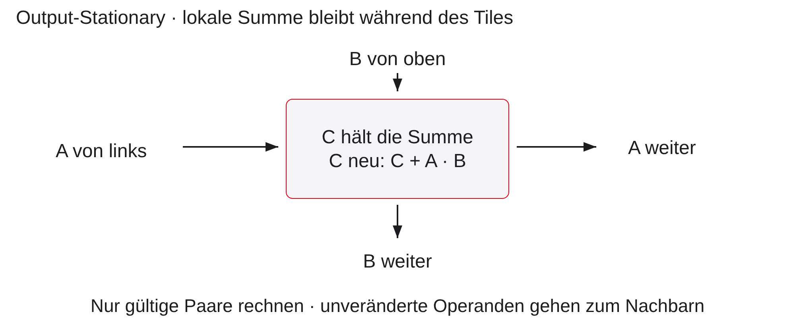
Output-Stationary: Die Ausgabeteilsumme bleibt während des Tiles lokal.
Eine systolische Zelle verbindet lokale Rechnung mit regelmäßiger Nachbarweitergabe. Der Name erinnert an rhythmisches Pumpen: Operanden bewegen sich in einer getakteten Welle durch das Gitter. Im gezeigten Output-Stationary-Datenfluss bleibt die Ausgabeteilsumme während des Tiles, also des bearbeiteten Matrixausschnitts, an ihrem Platz.
A kommt von links und wird unverändert nach rechts gegeben; B kommt von oben und wandert unverändert nach unten. Die Zelle leitet weder das Produkt als neues A noch die Summe als neues B weiter. Bei einem gültigen zusammengehörigen Paar aktualisiert sie \(C\leftarrow C+AB\) . Die rote Umrandung markiert den lokalen Zustand. Fehlt ein gültiger Operand, bleibt die Summe in diesem Takt unverändert. Vier solcher Zellen können gemeinsam vier Ausgänge bilden. Entscheidend ist nun, dass Werte mit demselben inneren Summenindex gleichzeitig an derselben Zelle eintreffen.
Die Randeinspeisung passt die Ankunftszeiten an
4 / 6 · Systolisches Array
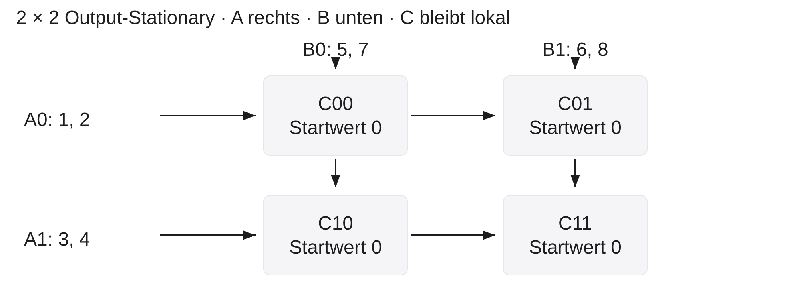
\(A_{ik}\) links in \(1+k+i\) , \(B_{kj}\) oben in \(1+k+j\)
Gemeinsame Ankunft in \((i,j)\) : \(1+k+i+j\)
Die räumliche Anordnung reicht für eine richtige Rechnung noch nicht aus. Die Randeinspeisung muss zusätzlich die Laufwege ausgleichen. Im Zwei-mal-zwei-Beispiel gelten wieder \(A=[[1,2],[3,4]]\) und \(B=[[5,6],[7,8]]\) . Die Indizes beginnen bei null. Zelle \(C_{ij}\) benötigt für jeden Summenschritt die Werte \(A_{ik}\) und \(B_{kj}\) mit demselben k.
A wird links in Takt \(1+k+i\) und B oben in \(1+k+j\) eingespeist. Nach j Schritten nach rechts beziehungsweise i nach unten erreichen beide die Zielzelle in \(1+k+i+j\) . Bei \(C_{00}\) sind das die Paare \((1,5)\) in eins und \((2,7)\) in zwei. Bei \(C_{11}\) treffen \((3,6)\) erst in drei und \((4,8)\) in vier ein. Diese Staffelung heißt auch Skewing. Leere Zeitplätze sind ungültig; sie dürfen nicht als numerische Nullprodukte mitgezählt werden. Aus den Ankünften folgt nun die ganze Rechenwelle.
Stationary: welcher Wert bleibt lokal?
4 / 6 · Systolisches Array
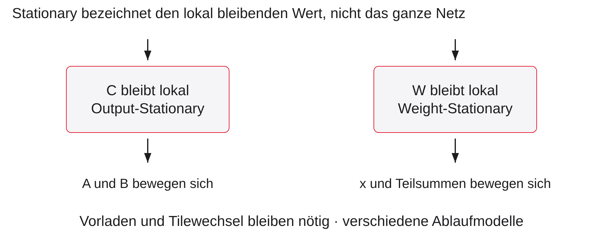
Ortsfeste Werte sparen Wiederholungen; alle anderen Datenwege bleiben nötig.
Stationary bezeichnet den Wert, der während eines Nutzungsabschnitts ortsfest bleibt. Links hält Output-Stationary eine Ausgabeteilsumme in der Zelle; passende Operanden kommen nacheinander dazu. Rechts hält Weight-Stationary ein Gewicht lokal, während Aktivierungen und Teilsummen nach einem anderen Plan bewegt werden. Rot markiert den jeweils bleibenden Wert, graue Pfeile die weitergegebenen Größen.
Der bisherige Vier-Takte-Ablauf gehört zur linken Organisation. Für die rechte müssen Einspeisung, Summenweitergabe und Reduktion neu festgelegt werden. Ein ortsfestes Gewicht ist dabei ladbar und nicht unveränderlich in Silizium eingebaut. Beim nächsten Tile oder einer anderen Schicht können neue Gewichte nötig sein. Welche Variante besonders wenig Verkehr verursacht, hängt von Matrixformen, verfügbaren Puffern und Wiederverwendung ab. Die beiden Bilder liefern daher eine Frage zur Datenorganisation, keine pauschale Rangliste von Geschwindigkeit oder Energie.
Räumliche Belegung und zeitliche Auslastung trennen
4 / 6 · Systolisches Array
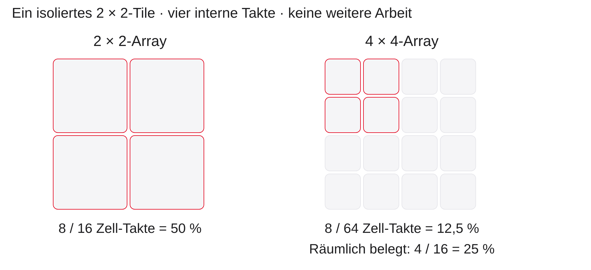
\(U=\dfrac{\text{gültige MACs}}{\text{Zellen}\cdot\text{Takte}}\)
Die Auslastung zählt genutzte Rechengelegenheiten über ein benanntes Zeitfenster. Weil jede Zelle höchstens eine MAC je Takt ausführen kann, ist ein Zell-Takt eine solche Gelegenheit. Unser einzelnes Tile erledigt acht gültige MACs. Auf vier Zellen in vier Takten sind das \(8/16=50\,\%\) . Wird es allein in den oberen linken vier Zellen eines sonst leeren 4×4-Arrays ausgeführt, sind es \(8/64=12{,}5\,\%\) .
Räumlich belegt dasselbe Tile dort vier von sechzehn Zellen, also 25 Prozent. Bezogen nur auf diese aktiven vier bleiben es über die vier Takte fünfzig Prozent zeitliche Auslastung. Die Bezugsmenge gehört deshalb zur Zahl. Für ein vollständig belegtes \(M\times N\) -Array mit innerer Dimension K folgt aus der Ankunftsformel das Fenster \(K+M+N-2\) und \(U=K/(K+M+N-2)\) . Größere K verringern den relativen Anteil des Füllens und Leerens. Zusätzliche Tiles oder eine andere Überlappung benötigen einen eigenen Ablauf.
Papierphase 3: das Array selbst verfolgen
4 / 6 · Systolisches Array
Teil A: 4.1–4.3 · 15 Minuten
Gültige Paare und Teilsummen je Takt eintragen
Nullprodukt von einem leeren Platz unterscheiden
Zeitliche Auslastung und räumliche Belegung getrennt nennen
Die Verallgemeinerung in 4.4–4.5 vertieft den Datenfluss.
Das Übungsblatt verlängert die innere Dimension des Tiles auf drei. Mit derselben Einspeiseregel entstehen fünf Takte. Die vier Teilsummen lauten nacheinander \([[2,0],[0,0]]\) , \([[0,8],[3,0]]\) , \([[-5,11],[3,12]]\) , \([[-5,12],[13,12]]\) und \([[-5,12],[13,10]]\) . Die letzten gültigen MACs liegen in drei für \(C_{00}\) , vier für \(C_{01}\) und \(C_{10}\) sowie fünf für \(C_{11}\) .
Bei \(C_{11}\) treffen \((3,4)\) , \((0,3)\) und \((2,-1)\) in drei, vier und fünf ein. Das Nullprodukt in vier bleibt eine gültige MAC. Die Zahlen pro Takt sind eins, drei, vier, drei und eins, insgesamt zwölf. Auf vier Zellen in fünf Takten folgen sechzig Prozent, auf allen sechzehn Zellen eines ansonsten leeren 4×4-Arrays fünfzehn Prozent; die räumliche Belegung dort beträgt 25 Prozent. Die allgemeine Vollbelegungsformel ergibt für 4×4 mindestens neunzig Prozent erst ab K 54. Vorladen und Auslesen sind weiterhin gesonderte Phasen.
5 · Das Modell in die Firmware bringen
Welche Zahlen und Speicherbereiche muss das Gerät tatsächlich bereitstellen?
Modellannahmen für diesen Abschnitt:
Flash hält Modelldaten; SRAM hält unter anderem Aktivierungen und Arbeitsbereich.
Int8: \([-128,127]\) ; Skala positiv; Halbfälle werden weg von null gerundet.
Beispiele mit einer Skala je Tensor; Bias mit Produktskala und Nullpunkt null.
Eine passende Rechenarchitektur braucht weiterhin ein ausführbares Modell mit einem eindeutigen Zahlenvertrag. Zuerst wird geprüft, welche Daten im Flash und welche während der Inferenz im Arbeitsspeicher leben. Erst daraus lässt sich beurteilen, ob ein anderes Zahlenformat eine sinnvolle Lösung für ein Speicherproblem ist.
Die folgenden Beispielzahlen verwenden Int8-Codes von \(-128\) bis 127 und eine positive Skala. Gerundet wird zum nächsten Integer, bei exakten Halbfällen weg von null. Eingaben und Gewichte besitzen jeweils eine Skala und einen Nullpunkt; Biaswerte verwenden die Produktskala. Die Laufzeit muss dieselben Vereinbarungen wie die Modellvorbereitung verwenden. Konkrete Operatorvarianten können kanalweise Skalen oder andere festgelegte Rundungen haben. Solche Verträge werden bei der Integration geprüft, statt aus dem Dateinamen oder der Speicherbreite geraten zu werden.
Flash und Tensor Arena getrennt planen
5 / 6 · Quantisierung und Speicher
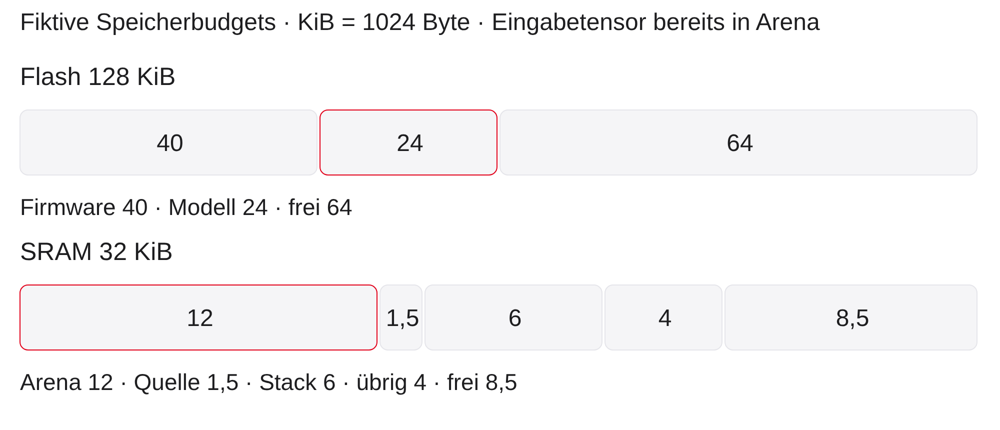
Reine Gewichte: Float32 braucht viermal so viele Bytes wie Int8.
Dauerhafte Parameter und laufende Arbeit belegen unterschiedliche Budgets. Flash hält nichtflüchtige Daten; SRAM ist flüchtiger Arbeitsspeicher. Die Tensor Arena ist ein geplanter zusammenhängender Bereich für Tensoren, vorübergehende Kernelpuffer und Verwaltungsdaten. Ihre Größe folgt aus Lebensdauern und Operatoren, nicht allein aus der Modelldatei.
Das Bild zeigt ein ausdrücklich anderes, fiktives Plattformbudget: Im Flash bleiben \(128-40-24=64\) KiB frei, im SRAM \(32-12-1{,}5-6-4=8{,}5\) KiB. Ein KiB sind 1024 Byte. Der Int8-Eingabetensor ist bereits in der Arena enthalten; das Float32-Quellfenster liegt daneben. Für größere Modelle kann Float32 die Flashreserve überschreiten. Int8 reduziert reine Gewichtbytes auf ein Viertel, lässt Bias, Verwaltungsdaten und Arena aber nicht automatisch im gleichen Verhältnis schrumpfen. Auch das kleinere Aktivitätsmodell muss mit seiner konkreten Arena geplant werden. const allein bestimmt nicht die physische Ablage; dazu gehören Linkerplatzierung und Startcode.
Quantisierung ordnet Codes reale Werte zu
5 / 6 · Quantisierung und Speicher
\[\widehat r=s(q-z),\qquad
q=\operatorname{clip}_{[-128,127]}\!\left(\operatorname{round}(r/s)+z\right)\]
\(s>0\) : realer Wert je Codeschritt\(z\) : Code für die reale Null\(q\) : gespeicherter Int8-Code
Kleinere Codes sparen Speicher; Skala und Nullpunkt erhalten ihre Bedeutung.
Quantisierung stellt reale Werte durch endlich viele Codes dar. Ein Int8-Code hat für sich allein noch keine physikalische oder mathematische Bedeutung. Diese entsteht erst durch Skala s und Nullpunkt z. Zum Kodieren wird durch s geteilt, gerundet, z addiert und auf den Codebereich begrenzt. Zum Rückrechnen wird z subtrahiert und mit s multipliziert.
Bei Nullpunkt minus drei repräsentiert Code minus drei die reale Null: \(s((-3)-(-3))=0\) . Code null muss somit nicht dem realen Wert null entsprechen. Der Skalierungsschritt bestimmt Auflösung und Wertebereich zugleich. Ohne Begrenzung ist der absolute Rundungsfehler höchstens \(s/2\) . Außerhalb des darstellbaren Bereichs tritt Sättigung auf; dort gilt diese kleine Fehlerschranke nicht. Die gewählten Quantisierungsparameter müssen anhand repräsentativer Daten festgelegt und bei der späteren Inferenz unverändert korrekt benutzt werden. Die resultierende Modellgüte bleibt Teil der Prüfung an neuen Daten.
Rundungsfehler und Sättigung unterscheiden
5 / 6 · Quantisierung und Speicher
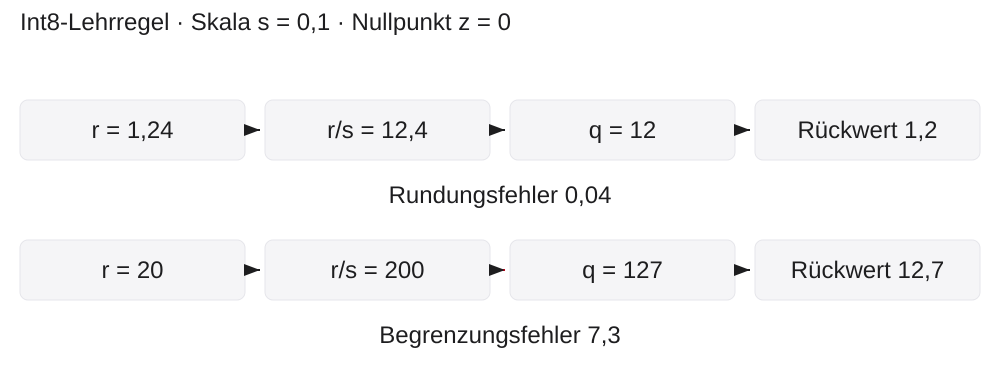
Mehr Wertebereich und feinere Auflösung stehen im Zielkonflikt.
Rundung und Sättigung verlieren auf unterschiedliche Weise Information. Bei \(s=0{,}1\) und \(z=0\) wird \(1{,}24/0{,}1=12{,}4\) auf zwölf gerundet. Der Rückwert 1,2 hat Fehler 0,04 und bleibt innerhalb der Schranke 0,05. Der entsprechende negative Wert wird zu minus zwölf und Rückwert minus 1,2.
Für zwanzig wäre der Code zweihundert nötig. Er liegt außerhalb von Int8 und wird auf 127 begrenzt. Der Rückwert 12,7 hat nun Fehler 7,3. Minus zwanzig wird auf minus 128 und Rückwert minus 12,8 begrenzt. Die untere Zeile der Grafik zeigt diesen anderen Fehlerfall. Eine größere Skala kann den Bereich erweitern, macht aber jeden Codeschritt gröber. Ob die geringeren Gewichtbytes die Erkennung weiterhin ausreichend genau erlauben, wird deshalb am quantisierten Modell und nicht allein am Speichergewinn beurteilt.
Quantisierte Produkte brauchen eine Produktskala
5 / 6 · Quantisierung und Speicher
\[a=\sum_i(q_{x,i}-z_x)(q_{w,i}-z_w)+q_b,\qquad r_y\approx s_xs_w a\]
Rechenkern: \(q_x=[12,-4]\) , \(z_x=-3\) , \(q_w=[2,3]\) , \(z_w=0\) .
\(s_x=0{,}1\) , \(s_w=0{,}2\) , \(q_b=5\) ergeben \(a=32\) und \(r_y\approx0{,}64\) .
Ein quantisiertes Skalarprodukt muss vor dem Multiplizieren seine Nullpunkte berücksichtigen. Der Biascode besitzt hier Nullpunkt null und dieselbe Skala \(s_xs_w\) wie die Produktsumme. Dadurch lassen sich alle Beiträge im breiten Akkumulator a addieren. Das kleine Zahlenbeispiel isoliert diese Rechenregel; es ist keine Behauptung über einen bestimmten trainierten Neuronenausgang.
Nach der Korrektur sind die Eingaben \(15\) und \(-1\) , die Gewichte zwei und drei. Die Produktsumme ist \(15\cdot2-1\cdot3=27\) , mit Bias fünf also 32. Die Produktskala ist 0,02 und liefert Realwert 0,64. Für eine anschließende Int8-Ausgabe mit \(s_y=0{,}05\) und \(z_y=-2\) wird erneut gerundet: \(q_y=\operatorname{round}(0{,}64/0{,}05)-2=11\) . Der Rückwert ist 0,65. Requantisierung fügt somit einen eigenen Fehler hinzu. Biaswerte und Akkumulatoren werden dabei weiterhin mit ihrer breiten Darstellung budgetiert.
6 · Die gesamte Anwendung beurteilen
Wann wird aus einer schnellen Matrixphase eine brauchbare Aktivitätserkennung?
Gemeinsame Bewertungsgrenze:
Beginn: ein neues Sensorfenster liegt bereit.
Ende: eine gültige Entscheidung liegt vor.
Vorverarbeitung, Kopien, übrige Operatoren und Nachbereitung zählen mit.
Für die Anwendung zählt die Entscheidung zur rechten Zeit, nicht der isolierte Abschluss eines Operators. Die gemeinsame Grenze reicht daher vom bereitstehenden Sensorfenster bis zum gültigen Ausgang. Alle seriellen Phasen innerhalb dieser Grenze werden mitgezählt. Ebenso müssen Modellgüte, Speicher und Energie unter passenden Bedingungen bewertet werden.
Die folgenden Zahlen verwenden ausdrücklich serielle Lehrzeiten ohne Überlappung. Sie zeigen das Amdahlsche Prinzip: Ein nur teilweise beschleunigter Ablauf bleibt durch seine anderen Anteile begrenzt; zusätzliche Übergaben können einen Teil des Gewinns verbrauchen. Davon getrennt ist die Gültigkeit der Entscheidung. Ein schnell berechneter Score nach falscher Kanalreihenfolge oder ein alter Puffer nach Fehler ist kein brauchbares Ergebnis. Der abschließende Blick auf das Sensorgerät verbindet diese Systemfragen wieder mit den Messdaten und dem gewählten Modell vom Einstieg.
Amdahl: Teilgewinn und Gesamtgewinn
6 / 6 · Firmware und Gesamtbilanz
Dense zehnmal schneller: Welchen Gesamtfaktor erwarten Sie?
Serielle Zeiten in Millisekunden; gleicher Input und gleiche Ausgabe:
Vorverarbeitung
\(2\) \(2\)
zusätzliche Kopie
\(0\) \(1\)
Dense
\(10\) \(1\)
übrige Operatoren
\(3\) \(3\)
Nachbereitung
\(1\) \(1\)
Das Amdahlsche Gesetz begrenzt den Gesamtgewinn einer Teilbeschleunigung. Der CPU-Pfad braucht \(2+10+3+1=16\) Millisekunden. Mit Beschleuniger sind es \(2+1+1+3+1=8\) Millisekunden einschließlich der Kopie. Die Dense-Phase wird Faktor zehn schneller, die gesamte Entscheidung Faktor zwei. Lassen Sie zuerst eine Vermutung begründen und anschließend die komplette Grenze bilanzieren.
Ohne neue Übergabekosten lautet die bekannte Form \(S=1/((1-f)+f/s)\) : f ist der bisherige Zeitanteil des beschleunigten Teils und s dessen Teilfaktor. Hier gilt \(f=10/16\) ; die zusätzliche Kopie ergänzt im Nenner den Anteil \(1/16\) . Selbst eine Dense-Zeit null lässt sieben Millisekunden übrig, also höchstens Faktor \(16/7\) . Die Rechnung begründet eine Latenzaussage, noch keine Energieersparnis. Gerade beim kleinen Aktivitätsmodell können Übergabe und übrige Firmwarearbeit die Hardwarewahl stärker bestimmen als der isolierte Rechenpeak.
Sensorfenster und Ausgabe brauchen einen Vertrag
6 / 6 · Firmware und Gesamtbilanz
Aktivitätsmodell aus der Übung: 32 Zeitpunkte × drei Achsen → 96 Eingabewerte
Reihenfolge, Abtastrate und Vorverarbeitung müssen zum Training passen.
Float32-Quelle und Int8-Zieltensor sind getrennte Speicheranteile.
Drei Scores → größter Score → Klassenindex
Ausgaben erst nach erfolgreicher Inferenz interpretieren.
Die Bedeutung einer Eingabe folgt nicht allein aus ihrer Länge. Für das Aktivitätsmodell der Übung werden 32 Zeitpunkte mit je drei Achsen zeitpunktweise angeordnet. Das ergibt 96 Elemente. Dieselbe Anzahl in einer anderen Reihenfolge oder mit anderer Vorverarbeitung beschreibt jedoch eine andere Eingabe. Auch ein Zeiger enthält nur die Adresse: sizeof eines Zeigers liefert keine Arraylänge.
Ein Float32-Quellfenster und ein quantisierter Int8-Eingabetensor besitzen unterschiedliche Größen und können zeitweise zugleich leben. Der Zieltensor liegt gegebenenfalls bereits in der Arena und wird dann im Budget nicht erneut addiert. Am Ausgang sind drei Scores zunächst drei Bewertungswerte. Argmax wählt deren größten und liefert den Klassenindex; Wahrscheinlichkeiten benötigen zusätzlich eine entsprechend definierte Ausgabe. Eine korrekt erkannte Klasse Gehen ist außerdem noch keine Schrittzahl. Dieser Vertrag führt die konkrete Klassifikationsaufgabe und die Firmwareintegration zusammen.
Die Funktion bestimmt die Hardwarewahl
6 / 6 · Firmware und Gesamtbilanz
Aus dem Sensorfenster wird eine brauchbare Entscheidung, wenn …
Modell und Vorverarbeitung an neuen Fällen bestehen,
Operatoren, Formen und Zahlenformate zusammenpassen,
Speicher, Reaktionszeit und Energie im Gesamtsystem passen.
CPU, Vektoren und NPU sind mögliche Werkzeuge für diese Anforderungen.
Die Einstiegsfrage nach dem Programmieren von Stehen, Gehen und Laufen hat jetzt eine vollständige Antwort. Messdaten werden zu einem festgelegten Eingabefenster, das Modell berechnet daraus Scores und die Anwendung interpretiert die gewählte Klasse. Training und unabhängige Prüfung begründen, ob diese Entscheidung für die beabsichtigten neuen Fälle geeignet ist. Mehr Multiplikationsleistung kann diese Prüfung nicht ersetzen.
Die Hardware folgt dem Bedarf. Ein kleines Modell kann auf einer CPU laufen; Vektoren oder eine passende NPU können regelmäßige Teilrechnungen anders organisieren. Entscheidend bleiben Datenversorgung und Operatorunterstützung. Auch Nullgewichte sparen erst mit einer passenden dünnbesetzten Darstellung oder einem tatsächlich überspringenden Kernel Bytes beziehungsweise Arbeit. Ein funktionaler Host- oder Simulatorlauf prüft wiederum andere Eigenschaften als eine Hardwaremessung. Für die Bewertung werden deshalb numerische Korrektheit, Modellgüte, Speicher, Zeit und Energie getrennt nachgewiesen und anschließend unter derselben Anwendungsgrenze zusammengeführt.
Papierphase 4: Quantisierung und Firmware
6 / 6 · Firmware und Gesamtbilanz
Teil A: 5.1, 5.3 und 6.3 · 15 Minuten
Negative Werte quantisieren und Fehler erklären
Produktskalen und Requantisierung verfolgen
Lebensdauer, Zeigergröße und Fehlerstatus diagnostizieren
Weitere Budget- und Gesamtzeitfragen dienen der Nachbereitung.
Bei Skala 0,2 und Nullpunkt null liefert \(-1{,}37\) den Code \(-7\) , Rückwert \(-1{,}4\) und Fehler 0,03. \(-30\) sättigt dagegen auf \(-128\) , Rückwert \(-25{,}6\) und Fehler 4,4. Im getrennten Skalarprodukt der Aufgabe entsteht nach Nullpunktkorrektur \(6(-2)+(-4)3+4=-20\) . Mit Produktskala 0,025 sind das \(-0{,}5\) ; Requantisierung führt zu Code \(-3\) und Rückwert \(-0{,}48\) .
Im separaten Firmwarefall des Übungsblatts werden C-Grundlagen auf ein anderes Sensorfenster angewendet. Lokale Arena und lokaler Interpreter leben nach Verlassen von setup nicht weiter. Eine globale Zeigervariable verlängert ihre Lebensdauer nicht. sizeof(window) ergibt im RV32-Vertrag vier Zeigerbytes, nicht die benötigten 400 Elemente. Außerdem müssen Initialisierung, Tensorvertrag und Fehlerstatus geprüft werden. Die separat budgetierte dauerhafte Arena ersetzt den ungültigen lokalen Speicher; sie wird nicht als zweite Arena hinzuaddiert. Die vollständigen Korrekturen und weiteren Zeitrechnungen stehen im Lösungsprofil.
Abschlussquiz: Grenzen begründen
6 / 6 · Firmware und Gesamtbilanz
Zwölf QuizAcademy-Fragen · 15 Minuten
Erst allein entscheiden, dann die benötigte Annahme begründen
Parameter, MACs, Bytes und Takte auseinanderhalten
Fehlerfälle und geänderte Bedingungen prüfen
Teil B des Übungsblatts: drei längere Fälle zur selbstständigen Vertiefung
Das vollständige Quiz schließt die inhaltliche Arbeit ab. Es verbindet die Begriffe wieder mit konkreten Bedingungen: Parameter werden im Batch wiederverwendet, MACs je Eingabe erneut ausgeführt. Ein Roofline-Peak ist eine obere Rate; eine große Vektorkapazität ist keine Lanezahl. Ein zurückgesetzter Rechenpfad und ein gültiger neuer Ausgang sind ebenfalls verschiedene Aussagen.
Für die zwölf Fragen sind fünfzehn Minuten vorgesehen, etwa zwölf zur eigenen Entscheidung und drei zur gezielten Besprechung ausgewählter Fehlvorstellungen. Die drei schwierigeren Fragen verlangen die Übertragung von bekannten Regeln auf neue Größen. Jede Frage besitzt vier Optionen und genau eine richtige Antwort. Die Diskussion sollte die entscheidende Annahme benennen, nicht nur eine Optionsnummer. Die längeren Fälle aus Teil B verbinden anschließend selbstständig Modellformen, Speicher, Wartezeit, Quantisierung und Datenbreite. Zeitrichtwerte und Orientierungspunkte ersetzen keine verbindliche, gesondert festzulegende Klausurregelung.
Begriffe zum Nachlesen
Hintergrund · Deutsch und Englisch zuordnen
Merkmal · feature
MAC · Multiply-Accumulate
Inferenz · inference
Gewichte · weights
SIMD · Single Instruction, Multiple Data
Tensor Arena · Arbeitsbereich
Aktivierung · activation
RVV · RISC-V Vector Extension
Nullpunkt · zero point
Verlust · loss
Roofline · Rechen-/Bandbreitengrenze
Requantisierung · requantization
Definitionen und weitere Kursbegriffe im Glossar
Ein Fachbegriff hilft, wenn seine Bedeutung und seine Grenze klar bleiben. Ein Merkmal beschreibt eine Eingabe; ein Gewicht ist ein fester Modellparameter während der betrachteten Inferenz. Eine Aktivierung entsteht dagegen für das aktuelle Fenster. Die Aktivierungsfunktion ist die Regel, die auf eine Voraktivierung angewendet wird. Diese Unterscheidungen verbinden die ersten Messdaten mit der späteren Speicherbilanz.
Ebenso bezeichnet eine MAC eine Rechenoperation mit Multiplikation und Akkumulation, aber keine feste Zahl von Prozessortakten. Die Vektorkapazität begrenzt die Zahl aktiver Elemente; die physischen Lanes und ihre Datenversorgung bestimmen das zeitliche Verhalten. Das Kursglossar ordnet die deutschen und englischen Bezeichnungen zusammen und nennt die Stellen der Einführung. Es dient zum Nachlesen, nicht als zusätzliche Liste auswendig zu lernender Abkürzungen. Die Tabelle fasst die drei Ebenen Daten, Rechnung und Firmware zusammen; die folgenden Quellen ermöglichen das gezielte Vertiefen einzelner Ebenen.
Quellen für Modelle, Daten und Hardware
Hintergrund · Primärquellen und Literatur
Die Grundlagen orientieren sich an Sarah L. Harris und David Money Harris, Digital Design and Computer Architecture, RISC-V Edition. David A. Patterson und John L. Hennessy, Computer Organization and Design, RISC-V Edition, vertiefen die Verbindung von Software und Rechnerorganisation. Die aktuellen technischen Einzelheiten werden zusätzlich an den jeweils genannten Primärquellen geprüft.
Das Roofline-Modell stammt von Samuel Williams, Andrew Waterman und David Patterson: Roofline: An Insightful Visual Performance Model for Multicore Architectures, Communications of the ACM 52(4), 2009, Seiten 65–76. H. T. Kungs Beitrag Why Systolic Architectures?, Computer, 1982, erläutert den Ansatz lokaler regelmäßiger Datenflüsse. Die eigenen Lehrabbildungen übernehmen keine Grafiken aus diesen Artikeln. Für die aktive Vektorlänge ist die RISC-V Vector Extension Version 1.0 maßgeblich; TFLMs Dokumentation beschreibt die tatsächliche Mikrocontroller-Speicherplanung.
Die MotionSense-Messungen stammen von Mohammad Malekzadeh, Richard G. Clegg, Andrea Cavallaro und Hamed Haddadi; die Original-README nennt Mobile Sensor Data Anonymization, IoTDI 2019, Seiten 49–58, DOI 10.1145/3302505.3310068. Im Repository stehen ein gepinnter Datenausschnitt, Herkunft und ursprünglicher MIT-Lizenztext. Die Zeitverläufe und Diagramme dieser Einheit wurden daraus beziehungsweise aus den angegebenen Gleichungen selbst erzeugt. Die Ausführung des NumPy-Lehrmodells und die abstrakten Hardware-Zeitmodelle sind getrennte Nachweise.
Mit eigenen Messdaten weiterarbeiten
Hintergrund · Optionaler Praxisversuch
Mit phyphox Beschleunigung aufzeichnen und als CSV exportieren.
Abtastrate, Einheit, Sensorlage, Aktivitätslabel und Personenaufteilung prüfen.
Lehrtraining im Notebook nachvollziehen und erst danach passende eigene Fenster ergänzen.
Ausführbares Trainings- und Abbildungsskript
Eine eigene Messung verbindet den aufgezeichneten Verlauf mit der anfangs vorgeschlagenen Regel. phyphox ist eine an der RWTH Aachen entwickelte Anwendung für Smartphone-Sensorversuche und bietet einen CSV-Export. Für einen Vergleich muss klar sein, ob die Aufzeichnung den Schwerkraftanteil enthält, welche Achsenreihenfolge verwendet wird und welche tatsächliche Abtastrate vorliegt. Das vorliegende Lehrmodell erwartet 32 aufeinanderfolgende XYZ-Punkte bei nominell 50 Hertz. Ein anderer Eingabevertrag verlangt eine passende Vorbereitung oder ein neu angepasstes Modell.
Das Notebook führt zuerst den vorhandenen MotionSense-Versuch mit dem mitgelieferten Python-Skript aus. Es benötigt NumPy und Matplotlib und läuft aus dem Repository; ein neuronales Framework oder eine NPU wird nicht benötigt. Die eigenen Messungen sind eine anschließende Erweiterung, keine bereits ausgeführte Datenerhebung dieser Vorlesung. Für reale Geräteprojekte führen unter anderem die Mikrocontroller-Laufzeit TFLM, NXP eIQ im MCUXpresso-Umfeld und STs STM32-/STEdgeAI-Werkzeuge weiter. Deren Operatorunterstützung, Speicherplanung und Zahlenformate sind pro Plattform zu prüfen. Dieser optionale Ausblick liegt außerhalb des 180-Minuten-Pflichtablaufs.